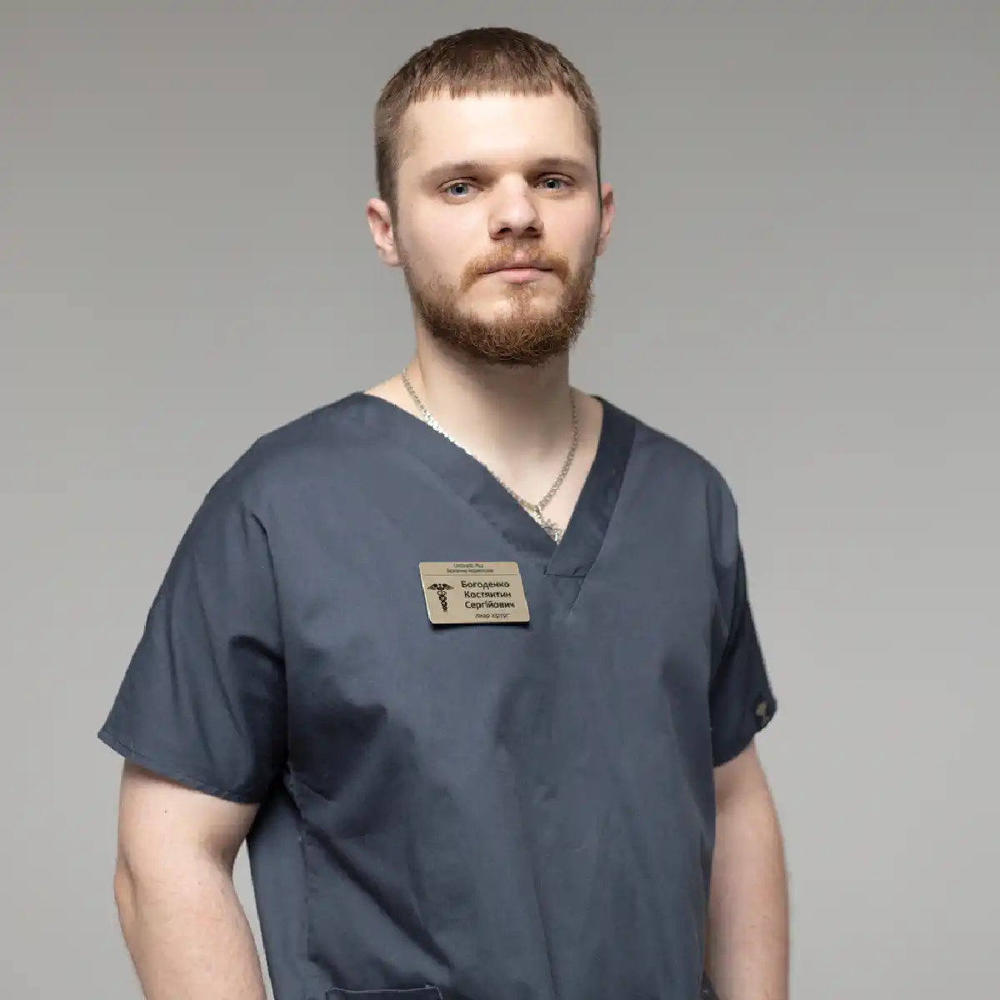

+38(068) 79 72 782
+38(068) 79 72 782Лікування алкогольної залежності у Холодногірському районі Харкова
Анонімна допомога нарколога 24/7


Безкоштовна консультація, працюємо цілодобово 24/7
Анонімна допомога нарколога 24/7

Дата написання: 15 жовт. 2026 р.
Останнє оновлення: 17 жовт. 2026 р.
Лікування алкогольної залежності в Холодногірському районі Харкова — комплексна медична допомога пацієнтам, які зіткнулися з регулярним уживанням алкоголю, тривалими запоями та неможливістю самостійно відмовитися від спиртного. Алкоголізм є хронічним захворюванням, яке впливає на фізичне здоров’я, психічний стан, сімейні стосунки та якість життя людини. Своєчасне звернення до нарколога дозволяє оцінити тяжкість залежності, виявити можливі ускладнення та розробити індивідуальну програму лікування. Залежно від стану пацієнта медична допомога може включати консультацію фахівця, лікування алкогольної абстиненції, медикаментозну терапію, психотерапію та реабілітацію. Для жителів Холодної Гори, Залютиного, Лисої Гори та інших мікрорайонів Холодногірського району може бути організований виїзд нарколога додому. Допомога надається з дотриманням конфіденційності медичної інформації. При тяжких станах пацієнту може знадобитися госпіталізація.
Починати лікування алкогольної залежності рекомендується при появі перших ознак втрати контролю над уживанням спиртного. Приводом для звернення стають регулярні епізоди надмірного вживання, неможливість зупинитися після першої дози, збільшення кількості алкоголю та повторні запої. Додатковими ознаками є погіршення стосунків із близькими, зниження працездатності та продовження вживання попри проблеми зі здоров’ям. Не слід чекати тяжких ускладнень або багаторічного розвитку залежності. Чим раніше пацієнт звертається до фахівця, тим більше можливостей для вибору відповідної програми лікування. Первинна консультація нарколога в Харкові допомагає оцінити характер уживання алкоголю, визначити наявність залежності та узгодити подальші дії.
Алкогольна залежність проявляється поєднанням поведінкових, психологічних і фізичних змін. Людина відчуває виражене бажання вжити спиртне, поступово втрачає контроль над кількістю випитого та продовжує вживання попри негативні наслідки. У деяких пацієнтів формується толерантність, коли для досягнення звичного ефекту потрібно більше алкоголю. При фізичній залежності після припинення вживання можуть з’являтися тремор рук, пітливість, тривожність, безсоння, нудота та прискорене серцебиття. Нерідко спостерігаються дратівливість, порушення пам’яті та зниження концентрації уваги. Водночас відсутність вираженої абстиненції не виключає алкогольної залежності. Діагноз встановлює фахівець на підставі клінічної оцінки, а не лише кількості випитого спиртного.
Розвиток алкогольної залежності пов’язаний із поєднанням біологічних, психологічних і соціальних чинників. Значення мають спадкова схильність, особливості системи винагороди головного мозку, хронічний стрес, психічні розлади та оточення людини. У деяких пацієнтів уживання алкоголю починається як спроба зменшити тривожність, впоратися з емоційним напруженням або порушеннями сну. Поступово регулярний вплив етанолу змінює роботу нервової системи та сприяє формуванню залежності. У чоловіків і жінок захворювання може мати різні особливості, пов’язані з фізіологією, характером уживання та супутніми захворюваннями. Однак основні діагностичні ознаки залишаються спільними. Лікування повинно враховувати не лише фізичну залежність, а й індивідуальні причини вживання алкоголю.
У традиційній наркологічній практиці виділяють кілька стадій алкоголізму, що відображають поступове посилення залежності. На початковому етапі можуть з’являтися підвищений потяг до спиртного, епізоди втрати контролю та зміна звичної поведінки. При подальшому прогресуванні формується більш виражена залежність, нерідко виникають запої та алкогольна абстиненція. При тяжкому тривалому перебігу підвищується ймовірність ураження внутрішніх органів, когнітивних порушень і соціальних наслідків. Сучасна діагностика також передбачає оцінку розладу, пов’язаного з уживанням алкоголю, за ступенем тяжкості. Не у всіх пацієнтів захворювання розвивається за однаковою схемою. Тому вибір лікування повинен ґрунтуватися на реальних симптомах, стані здоров’я та ризику ускладнень, а не лише на умовному номері стадії.
Регулярне надмірне вживання алкоголю підвищує ризик захворювань печінки, підшлункової залози, серцево-судинної та нервової систем. У пацієнтів можуть розвиватися алкоголь-асоційована хвороба печінки, панкреатит, артеріальна гіпертензія, порушення серцевого ритму та периферична нейропатія. Тривале вживання спиртного також пов’язане з підвищеним ризиком деяких онкологічних захворювань. При тяжкій залежності нерідко виникають порушення харчування, дефіцит вітамінів, тривожні та депресивні симптоми. Окрему небезпеку становлять алкогольні отруєння, травми та ускладнення синдрому відміни. Своєчасне лікування алкоголізму в Харкові дозволяє впливати на залежність і зменшувати ризики, пов’язані з подальшим уживанням спиртного. За наявності вже сформованих захворювань потрібне додаткове спостереження профільних фахівців.
Деяким людям вдається припинити вживання алкоголю самостійно, однак при сформованій залежності такий підхід може супроводжуватися значними труднощами та ризиком повторного вживання. Особливо небезпечно різко припиняти тривале інтенсивне вживання спиртного за наявності фізичної залежності. У подібних випадках можливі виражена абстиненція, судомні напади та алкогольний делірій. Медична консультація допомагає оцінити необхідність безпечного супроводу періоду відміни. Крім того, лікування залежності передбачає не лише припинення вживання, а й роботу з психологічними причинами, звичками та обставинами, що провокують рецидиви. Професійна підтримка може включати психотерапію, медикаментозне лікування та регулярне спостереження.
Первинна консультація є важливим етапом лікування алкогольної залежності. Під час прийому нарколог уточнює тривалість уживання спиртного, кількість алкоголю, частоту запоїв, наявність симптомів відміни та попередній досвід лікування. Додатково фахівець оцінює хронічні захворювання, ліки, які приймає пацієнт, і його психічний стан. За необхідності призначаються лабораторні дослідження та інструментальна діагностика. На підставі отриманих даних лікар обговорює доступні варіанти лікування, можливі протипоказання та орієнтовну тривалість терапії. Особливу увагу приділяють добровільній інформованій згоді пацієнта. Індивідуальна програма може включати допомогу при абстиненції, медикаментозну профілактику рецидивів і психотерапевтичний супровід.
Анонімне лікування алкоголізму в Холодногірському районі передбачає повагу до приватного життя пацієнта та дотримання конфіденційності медичних відомостей. Багато людей відкладають звернення до лікаря через страх осуду, проблем на роботі або розголошення діагнозу. Під час консультації фахівець обговорює стан здоров’я та варіанти лікування відповідно до правил лікарської таємниці. Водночас конфіденційність не означає повної відсутності медичної документації. Обсяг необхідних персональних даних і порядок їх обробки залежать від чинного законодавства та формату надання допомоги. Пацієнт має право отримати інформацію про умови лікування та захист своїх медичних відомостей. Такий підхід допомагає створити довірливі стосунки між людиною та лікарем, який її лікує.
Цілодобова наркологічна допомога на Холодній Горі дозволяє звернутися за медичною консультацією при погіршенні самопочуття після вживання спиртного, появі симптомів відміни та інших проблемах, пов’язаних із залежністю. У деяких пацієнтів тривога, тремор і порушення сну посилюються у вечірній або нічний час. Можливість звернення 24/7 допомагає своєчасно обговорити скарги та визначити подальші дії. За стабільного стану може бути узгоджений виїзд фахівця додому. Водночас цілодобовий формат роботи не замінює екстрену медичну допомогу. Якщо в пацієнта з’являються судоми, галюцинації, виражена сплутаність свідомості, біль у грудях або порушення дихання, необхідно негайно викликати швидку допомогу за номером 103 або 112.
Виїзд нарколога додому в Холодногірському районі може бути зручним варіантом первинної медичної допомоги для пацієнтів, яким складно самостійно відвідати клініку. Під час звернення необхідно повідомити вік людини, тривалість уживання алкоголю, час останнього приймання спиртного та основні симптоми. Виклик нарколога додому в Харкові дозволяє організувати медичний огляд, оцінити ймовірність ускладнень і визначити можливість лікування поза стаціонаром. За наявності показань лікар призначає необхідні препарати або рекомендує додаткові обстеження. Час прибуття фахівця залежить від конкретної адреси, дорожньої ситуації, поточного навантаження медичної служби та умов безпеки. При небезпечних симптомах слід викликати екстрену допомогу, не очікуючи планового приїзду нарколога.
Виїзна наркологічна допомога може надаватися жителям Холодної Гори, Залютиного, Лисої Гори, Гиївки, Іванівки та інших територій Холодногірського району Харкова в межах фактичної зони обслуговування медичної служби. Можливість приїзду лікаря залежить від місця перебування пацієнта, доступності фахівця та транспортних умов. Під час оформлення виклику необхідно повідомити точну адресу, орієнтири та контактний телефон. Для віддалених ділянок району час прибуття може відрізнятися від орієнтовного. Медична допомога вдома розглядається лише за стабільного стану пацієнта та відсутності ознак тяжких ускладнень. За необхідності госпіталізації фахівець визначає подальшу тактику та рекомендує відповідний медичний заклад.
Перед початком лікування нарколог оцінює загальний стан пацієнта, рівень свідомості, дихання, пульс, артеріальний тиск та ознаки алкогольної абстиненції. Лікар уточнює історію вживання спиртного, наявність судомних нападів, делірію та інших ускладнень у минулому. Особливу увагу приділяють стану серцево-судинної системи, печінки та нервової системи. За медичними показаннями можуть знадобитися ЕКГ, аналізи крові, визначення рівня глюкози та електролітів. Отримані дані дозволяють визначити тяжкість стану та обрати відповідний формат лікування. При високому ризику ускладнень рекомендується госпіталізація. Призначення сильнодіючих препаратів без попередньої оцінки стану може бути небезпечним.
Лікування алкогольної залежності включає кілька взаємопов’язаних напрямів. За наявності абстинентного синдрому спочатку проводять медичну оцінку та, за показаннями, лікування симптомів відміни. Після стабілізації стану можуть застосовуватися препарати для зниження ризику повторного вживання алкоголю, психотерапія та програми реабілітації. У деяких випадках розглядаються методи медикаментозної підтримки, засновані на дії налтрексону, акампросату або дисульфіраму з урахуванням протипоказань і доступності препаратів. Вибір лікування залежить від ступеня тяжкості залежності, супутніх захворювань і вподобань пацієнта. Найстійкіші результати передбачають комплексний підхід, регулярне спостереження та участь самого пацієнта у відновленні.
Виведення із запою вдома в Холодногірському районі передбачає медичну оцінку стану після тривалого вживання алкоголю та визначення необхідності лікування синдрому відміни. Нарколог уточнює тривалість запою, вираженість симптомів і ризик ускладнень. Виведення із запою вдома Харків можливе в окремих пацієнтів із легкою абстиненцією, стабільним станом і можливістю належного спостереження. За необхідності лікар призначає медикаментозну терапію та надає рекомендації щодо подальшого відновлення. Важливо враховувати, що одна процедура не усуває алкогольну залежність і не гарантує відсутності повторних запоїв. При тяжкій абстиненції, судомах, галюцинаціях і нестабільних життєвих показниках необхідна стаціонарна медична допомога.
Крапельниця від алкоголю на Холодній Горі може призначатися при вираженому зневодненні, повторному блюванні, неможливості відновлювати рідину через рот і певних порушеннях водно-електролітного балансу. Крапельниця від алкоголю вдома проводиться за медичними показаннями після обстеження пацієнта. Лікар визначає склад розчину, об’єм інфузії та необхідність спостереження. При захворюваннях серця та нирок внутрішньовенне введення рідини потребує особливої обережності. Важливо розуміти, що інфузійна терапія не прискорює безпосередньо розщеплення етанолу та не є самостійним методом лікування алкоголізму. При легкому похміллі, коли людина здатна пити самостійно, крапельниця зазвичай не потрібна. При тяжкій абстиненції необхідна специфічна медична терапія, а іноді госпіталізація.
Алкогольний абстинентний синдром розвивається в людей із фізичною залежністю після припинення або значного скорочення регулярного вживання спиртного. Основними проявами є тремор рук, пітливість, тривожність, безсоння, прискорене серцебиття та підвищення артеріального тиску. У тяжких випадках можливі судоми та алкогольний делірій. Лікування алкогольної абстиненції спрямоване на контроль симптомів, профілактику ускладнень і стабілізацію стану пацієнта. Лікар визначає необхідність медикаментозної терапії, призначення тіаміну, корекції водно-електролітних порушень і спостереження. При високому ризику судом або делірію необхідне стаціонарне лікування. Самостійне застосування сильнодіючих заспокійливих препаратів після алкоголю може бути небезпечним.
Медикаментозна терапія алкогольної залежності підбирається індивідуально після оцінки стану пацієнта. Її завдання можуть включати зменшення патологічного потягу до алкоголю, зниження ризику повторного вживання та лікування супутніх розладів. Для профілактики рецидивів у певних ситуаціях застосовуються препарати на основі налтрексону або акампросату. Дисульфірам може використовуватися в окремих мотивованих пацієнтів за дотримання протипоказань і умов безпечного спостереження. Медикаментозне лікування не замінює психотерапію та не гарантує повного позбавлення від залежності. Лікар повинен пояснити механізм дії обраного препарату, очікувану користь, можливі побічні ефекти та лікарські взаємодії. При порушеннях функції печінки та інших хронічних захворюваннях потрібна особлива обережність.
Кодування від алкоголізму в Холодногірському районі Харкова — поширена назва різних методів, спрямованих на підтримання відмови від спиртного. У медичній практиці під цим терміном можуть розумітися медикаментозні та психотерапевтичні втручання. Кодування від алкоголізму в Харкові потребує попередньої консультації, оцінки протипоказань і добровільної згоди пацієнта. При використанні дисульфіраму необхідно враховувати ймовірність небезпечної реакції при вживанні алкоголю. Окремі методи, які пропонуються як кодування, мають обмежену доказову базу, тому перед процедурою важливо уточнити її ефективність і безпечність. Кодування не усуває автоматично психологічні причини залежності. Для стійкого результату рекомендується поєднувати відповідне медикаментозне лікування з психотерапією та подальшим спостереженням.
Вибір препаратів залежить від клінічного завдання. При гострій алкогольній абстиненції під медичним контролем можуть використовуватися бензодіазепіни та інші засоби відповідно до протоколів лікування. Для профілактики дефіциту вітаміну B1 пацієнтам із групи ризику призначають тіамін. Після стабілізації стану можуть розглядатися препарати для зниження ризику рецидиву, включно з налтрексоном, акампросатом і дисульфірамом. Ці ліки мають різні механізми дії, протипоказання та особливості застосування. Наприклад, налтрексон несумісний із поточним застосуванням опіоїдних препаратів, а дисульфірам здатний спричиняти серйозну реакцію при вживанні алкоголю. Самостійно призначати подібні засоби не можна. Медикаментозна схема повинна складатися лікарем з урахуванням стану пацієнта.
Психотерапія відіграє важливу роль у комплексному лікуванні алкогольної залежності. Вона допомагає людині краще розуміти причини вживання спиртного, розпізнавати ситуації підвищеного ризику та формувати нові способи подолання стресу. Для лікування можуть застосовуватися когнітивно-поведінкова терапія, мотиваційні втручання, сімейна терапія та інші структуровані методи. Допомога психолога при алкогольній залежності особливо корисна за наявності тривожності, сімейних конфліктів і труднощів із підтриманням тверезості. Робота фахівця спрямована на розвиток навичок самоконтролю, зміну звичок і профілактику повторного вживання. За необхідності психотерапія поєднується з медикаментозним лікуванням і психіатричною допомогою. Тривалість психологічного супроводу визначається індивідуально.
Лікування алкоголізму вдома можливе лише в тих випадках, коли стан пацієнта дозволяє безпечно проводити амбулаторне спостереження. Домашній формат може включати консультацію нарколога, оцінку симптомів, призначення окремих препаратів і подальший медичний супровід. Однак комплексне лікування алкогольної залежності зазвичай потребує тривалої роботи, яка не обмежується домашніми процедурами. При тяжкій абстиненції, алкогольному делірії, судомах, виражених психічних порушеннях і серйозних супутніх захворюваннях домашньої допомоги може бути недостатньо. У таких ситуаціях необхідний стаціонар. Рішення про місце лікування ухвалює лікар після оцінки медичних ризиків, доступності спостереження та можливості своєчасного надання екстреної допомоги.
Стаціонарне лікування рекомендується при тяжкій алкогольній абстиненції, високому ризику судомних нападів, алкогольному делірії, виражених порушеннях свідомості та нестабільних життєвих показниках. Госпіталізація також може знадобитися при тяжкому зневодненні, серйозних захворюваннях печінки, серця, нирок і відсутності можливості безпечного спостереження вдома. Наркологічний стаціонар у Харкові дозволяє організувати цілодобовий медичний контроль, необхідні обстеження та лікування ускладнень. У стаціонарі можуть проводитися медикаментозна терапія, корекція виявлених порушень і оцінка психічного стану пацієнта. Після стабілізації рекомендується продовжити лікування залежності амбулаторно або в межах реабілітаційної програми.
Реабілітація допомагає пацієнту закріпити результати початкового лікування та знизити ймовірність повернення до вживання спиртного. Програма може включати індивідуальну та групову психотерапію, психологічну підтримку, роботу із сімейними стосунками та відновлення повсякденних навичок. Особливу увагу приділяють ситуаціям, які раніше провокували вживання алкоголю. Реабілітація при алкогольній залежності може проводитися в амбулаторному або стаціонарному форматі залежно від потреб людини. Тривалість відновлення індивідуальна та залежить від тяжкості залежності, супутніх психічних розладів і соціальної підтримки. Реабілітація не гарантує повної відсутності рецидивів, але допомагає формувати стійкі навички тверезого життя.
Профілактика повторних запоїв є важливою частиною лікування алкогольної залежності. Після припинення вживання спиртного необхідно визначити ситуації, які підвищують ризик рецидиву: стрес, конфлікти, спілкування в компанії людей, які вживають алкоголь, та емоційні перевантаження. Лікар може рекомендувати продовження медикаментозної терапії за показаннями, психотерапевтичні консультації та участь у групах взаємодопомоги. Важливу роль відіграють повноцінний сон, регулярне харчування та підтримка близьких. Пацієнту бажано заздалегідь розробити план дій на випадок посилення потягу до алкоголю. Якщо стався епізод повторного вживання, не слід відмовлятися від подальшого лікування. Своєчасне звернення до фахівця допомагає переглянути програму та запобігти розвитку нового тривалого запою.
Родичі людини з алкогольною залежністю нерідко стикаються із запереченням проблеми, відмовою від консультації та повторними запоями. У такій ситуації важливо уникати погроз, приниження та конфліктів, особливо коли людина перебуває у стані сп’яніння. Рекомендується обговорювати необхідність лікування в спокійній обстановці, наводити конкретні приклади наслідків уживання та пропонувати професійну допомогу. Корисною може бути консультація нарколога для родичів, під час якої фахівець пояснює особливості залежності та можливі способи мотивації до лікування. Не слід самостійно підмішувати ліки в їжу або напої. При агресії, погрозах або небезпечних симптомах необхідно насамперед забезпечити безпеку оточення та звернутися по відповідну допомогу.
Лікування алкогольної залежності зазвичай проводиться на підставі добровільної інформованої згоди пацієнта. Родичі можуть організувати консультацію, отримати рекомендації та запропонувати людині звернутися до лікаря, однак не мають права самостійно призначати їй лікування. Використання медикаментів без відома пацієнта становить серйозну небезпеку та може призвести до тяжких ускладнень. Винятки із загального правила добровільності медичних втручань визначаються законодавством і стосуються окремих невідкладних ситуацій. При виражених порушеннях свідомості, судомах, тяжкому психічному стані або безпосередній загрозі життю необхідна екстрена медична допомога. Мотиваційна робота та шанобливе спілкування часто стають важливими етапами підготовки людини до добровільного лікування.
Багато пацієнтів цікавляться можливістю отримати допомогу нарколога без постановки на диспансерний облік. Під час звернення до приватного медичного закладу необхідно уточнити порядок оформлення консультації, ведення медичної документації та обробки персональних даних. Слід розрізняти медичне спостереження, обов’язкові вимоги законодавства та конфіденційність інформації про стан здоров’я. Лікування не повинно супроводжуватися необґрунтованими обіцянками повної відсутності медичних записів. Відомості про діагноз і проведені процедури захищаються правилами лікарської таємниці. Пацієнт має право отримати інформацію про умови надання медичних послуг, необхідні документи та порядок використання персональних даних до початку лікування.
Вартість лікування алкогольної залежності в Холодногірському районі Харкова починається від 2199 грн.
| Популярні послуги | Ціна |
|---|---|
| Нарколог Харків | Від 1500 грн |
| Крапельниця від алкоголю | Від 2199 грн |
| Виведення із запою вдома | Від 2199 грн |
| Кодування від алкоголізму | Від 6000 грн |
Для запису на лікування алкогольної залежності в Холодногірському районі необхідно зв’язатися з медичною службою та описати причину звернення. Бажано повідомити вік пацієнта, тривалість уживання спиртного, час останнього приймання алкоголю, наявність хронічних захворювань та основні скарги. Якщо людина перебуває в запої, важливо уточнити вираженість тремору, наявність блювання, порушень сну та попередніх ускладнень синдрому відміни. Після попередньої оцінки узгоджуються доступний формат консультації, можливість виїзду лікаря та вартість послуги. Під час первинного огляду фахівець визначає подальшу тактику. При ознаках невідкладного стану, включно із судомами, сплутаністю свідомості або порушеннями дихання, необхідно негайно викликати швидку допомогу.
Цілодобова наркологічна допомога в Харкові дозволяє звернутися за консультацією при алкогольній залежності, тривалому запої, симптомах абстиненції та необхідності підбору подальшого лікування. Виїзне обслуговування може охоплювати Холодногірський, Шевченківський, Київський, Салтівський, Немишлянський, Індустріальний, Слобідський, Основ’янський і Новобаварський райони міста в межах фактичної зони роботи медичної служби. Нарколог проводить оцінку стану, визначає необхідність обстежень і рекомендує відповідні методи лікування. За стабільного стану окремі заходи можуть проводитися вдома, а при тяжких ускладненнях необхідний стаціонар. Лікування алкогольної залежності потребує комплексного підходу, що включає медичну допомогу, психологічну підтримку та профілактику повторного вживання. Своєчасне звернення до фахівця допомагає розпочати відновлення та знизити ймовірність небезпечних наслідків алкоголізму. Телефон для консультації та виклику нарколога додому в Харкові: +38(050-021-69-57)

Статтю перевірено експертом
Могучев Станіслав
Лікар-терапевт, ординатор
Можливо цікава стаття:
Що робити родичам, якщо близька людина в запої

Починати лікування варто вже тоді, коли вживання алкоголю стає регулярним, людині складно контролювати кількість випитого, з’являються запої, абстинентний синдром, проблеми зі здоров’ям, роботою або стосунками з близькими. Чим раніше людина звертається по допомогу, тим менший ризик тяжких ускладнень і прогресування залежності.
Алкогольна залежність належить до хронічних розладів, однак за умови правильно підібраного лікування можна досягти тривалої стійкої ремісії та повністю відмовитися від вживання алкоголю. Результат залежить від мотивації пацієнта, тяжкості залежності, тривалості вживання алкоголю та дотримання рекомендацій лікаря.
Лікування починається з консультації та оцінки стану пацієнта. Лікар уточнює тривалість і характер вживання алкоголю, наявність запоїв, симптоми абстиненції, хронічні захворювання та попередні спроби лікування. Якщо пацієнт перебуває у запої або має виражений синдром відміни, першим етапом може бути детоксикація та стабілізація стану.
Окремі етапи лікування алкогольної залежності можуть проводитися вдома. Це може бути виведення із запою, детоксикація, лікування легкого або помірного абстинентного синдрому, консультація лікаря та подальший медикаментозний супровід.
Стаціонар може знадобитися при тяжкому абстинентному синдромі, тривалому запої, судомах, галюцинаціях, сплутаності свідомості, підозрі на алкогольний делірій, виражених порушеннях артеріального тиску або серцевого ритму, а також при тяжких супутніх захворюваннях. У стаціонарі стан пацієнта можна контролювати цілодобово.
Якщо пацієнт перебуває у запої, першим етапом зазвичай є безпечне припинення вживання алкоголю та лікування абстинентного синдрому. Після стабілізації фізичного стану можна переходити до подальшого лікування залежності, протирецидивної терапії, психотерапії та інших методів.
Лікування може включати медикаментозну терапію, детоксикацію, протирецидивне лікування, психотерапію, роботу з мотивацією, кодування та реабілітаційні програми. Зазвичай найбільшу ефективність дає комплексний підхід, коли лікар підбирає методи з урахуванням стану та індивідуальних особливостей конкретного пацієнта.
Кодування може використовуватися як один з етапів лікування алкогольної залежності. Його завдання — допомогти людині зберігати тверезість і знизити ризик вживання алкоголю протягом певного періоду. Водночас кодування не усуває всі психологічні та поведінкові причини залежності, тому часто поєднується з консультаціями фахівця, психотерапією та іншими методами лікування.
Планове лікування алкогольної залежності зазвичай проводиться за поінформованою згодою самого пацієнта. Якщо людина не хоче лікуватися, родичі можуть звернутися за консультацією та обговорити зі спеціалістом способи мотивації до лікування. У станах, що становлять безпосередню загрозу життю або здоров’ю, необхідна екстрена медична допомога.
Тиск, погрози та постійні конфлікти часто лише посилюють опір. Родичам краще спокійно обговорювати конкретні наслідки вживання алкоголю та пропонувати консультацію спеціаліста. Може використовуватися мотиваційна бесіда, мета якої — допомогти людині усвідомити проблему та самостійно прийняти рішення про початок лікування.
Після стабілізації стану важливо продовжувати лікування та не обмежуватися лише детоксикацією або виведенням із запою. Знизити ризик зриву допомагають регулярні консультації спеціаліста, психотерапія, протирецидивне лікування, уникнення ситуацій, пов’язаних із вживанням алкоголю, підтримка близьких та зміна звичного способу життя.
Реабілітація потрібна не кожному пацієнту в однаковому обсязі, однак при сформованій залежності, повторних запоях і частих зривах вона може суттєво доповнювати основне лікування. Реабілітаційна програма допомагає працювати з психологічними причинами вживання алкоголю, формувати нові звички та навички тверезого життя, а також знижувати ризик повернення до алкоголю.
Анонимно

Ну в хлопців просто золоті руки й світла голова, мене капали Олексій та Владислав, буквально за декілька сеансів я наче заново народився, до цього пив більше 3х тижнів, не міг зупинитись, дуже радий що знайшов саме цих спеціалістів, всім рекомендую
Анонимно
В течение нескольких лет я злоупотреблял алкоголь, что привело к увольнению с работы и вызвало у меня мысли о суициде. Понимая, что такой образ жизни неприемлем, я обратился за помощью в клинику “Амбрела”. Здесь я смог преодолеть свою зависимость от спиртного благодаря заботливым и опытным врачам, а также эффективной системе лечения. Спустя более года я полностью избавился от желания употреблять алкоголь, и теперь моя жизнь вернулась в норму. Я даже не приближаюсь к спиртному! Благодарю врачей клиники “Амбрела” за их помощь и заботу.
Анонимно
Я обращался за помощью в различные клиники, пытаясь избавиться от своей зависимости от алкоголя, но без особых успехов. Никак не мог справиться с желанием прибегнуть к бутылке, пока друг не посоветовал мне обратиться в центр “Амбрелла”. Я записался на прием и был поражен заботливым отношением к пациентам. Уже прошло два года, и теперь я смотрю на алкоголь с абсолютной равнодушием, активно занимаюсь спортом и улучшил отношения в семье. Благодаря центру “Амбрелла” моя жизнь была спасена от алкогольной зависимости!
Анонимно
Хочу выразить свою благодарность врачам из центра алкоголизма “Амбрела” за то, что они буквально спасли мою жизнь. В течение последнего года я сильно увлекался питьем, и все это привело к катастрофическим последствиям. Хотя я ходил на терапевтические сеансы, но безрезультатно. Тогда я нашел адрес клиники “Амбрела” в интернете, изучил отзывы и информацию о центре, и записался на прием. Там мне сразу предложили методику лечения, которая помогла не только справиться с физической ломкой, но и психической зависимостью от алкоголя. Не буду распространяться, скажу только одно - после пребывания в этой клинике я стал другим человеком, и навсегда забыл, что такое привкус алкоголя. Больше меня не тянет на это! Я искренне верю, что в центре “Амбрела” трудятся настоящие целители душ!
Анонимно
После сложного развода мой сын начал подавлять свою обиду и горе употреблением алкоголя. Он старался скрывать это от меня, но я, как мать, почувствовала, что что-то не так. В конечном итоге, ситуация стала критической. Моя знакомая посоветовала мне обратиться в клинику “Амбрела”. Я была приятно удивлена их работой! Они помогли сыну преодолеть очередной период злоупотребления алкоголем, и с тех пор прошел уже более года, и он совсем не пьет.
Анонимно
Благодаря вашей помощи, моя семья была спасена. Я с трудом уговорила мужа начать лечение, и последний каплей был пьяное ДТП. К счастью, в аварии никто не пострадал, но это был для него сигнал к действию. Он наконец согласился пройти курс лечения на дому, в стационар не хотел ложиться. Лечение было трудным, и были моменты, когда срыв был настолько близок, но благодаря вашему центру Амбрелла мы справились с этим.
Анонимно
Для меня эта клиника стала настоящим спасением! Долгое время я упорно отказывался от лечения, уверен был, что со мной все в порядке. Но к счастью, семья уговорила меня попробовать. И сегодня я чувствую себя невероятно счастливым, осознавая, что мне абсолютно не нужен алкоголь. Огромное спасибо за помощь и поддержку, которые я получил здесь! Я благодарен вам за новую возможность жить полноценной и счастливой жизнью!
Анонимно
Выражаю благодарность ребятам, которые оказали мне помощь и не отвернулись. Уже 10 месяцев я остаюсь чистой. Благодарю за то, что помогли найти новый путь в моей жизни.
Номер телефону:
+380 (68) 797 27 82
+380 (50) 021 69 57
Адресу наркологічного центра вашого міста уточнюйте за
телефоном
Працюємо: Київ, Одеса, Львів, Харків, Дніпро, Запоріжжя,
Черкасах, Чугуєві, Чорноморську, Кам'янському
Telegram: t.me/umbrellaplus
Графік работы: Цілодобово